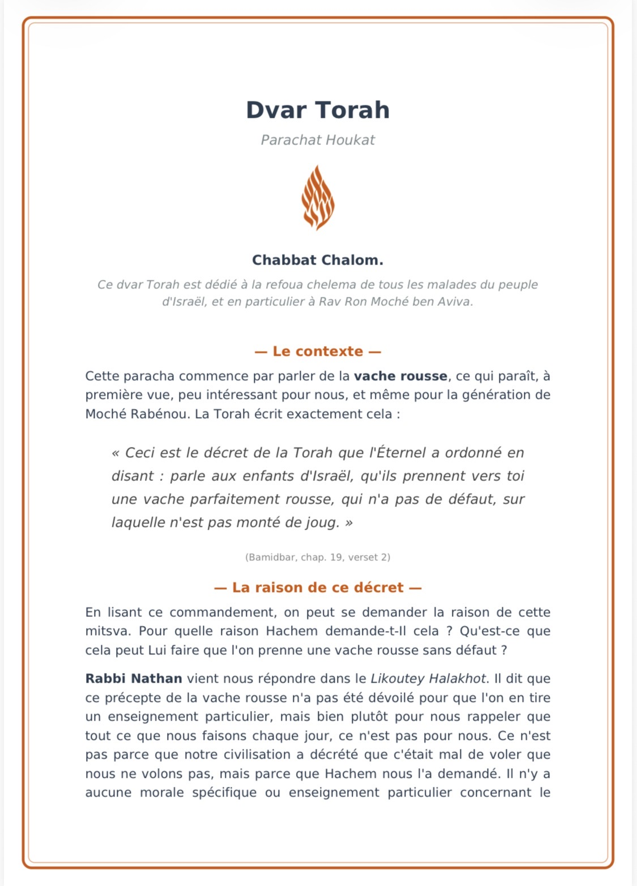
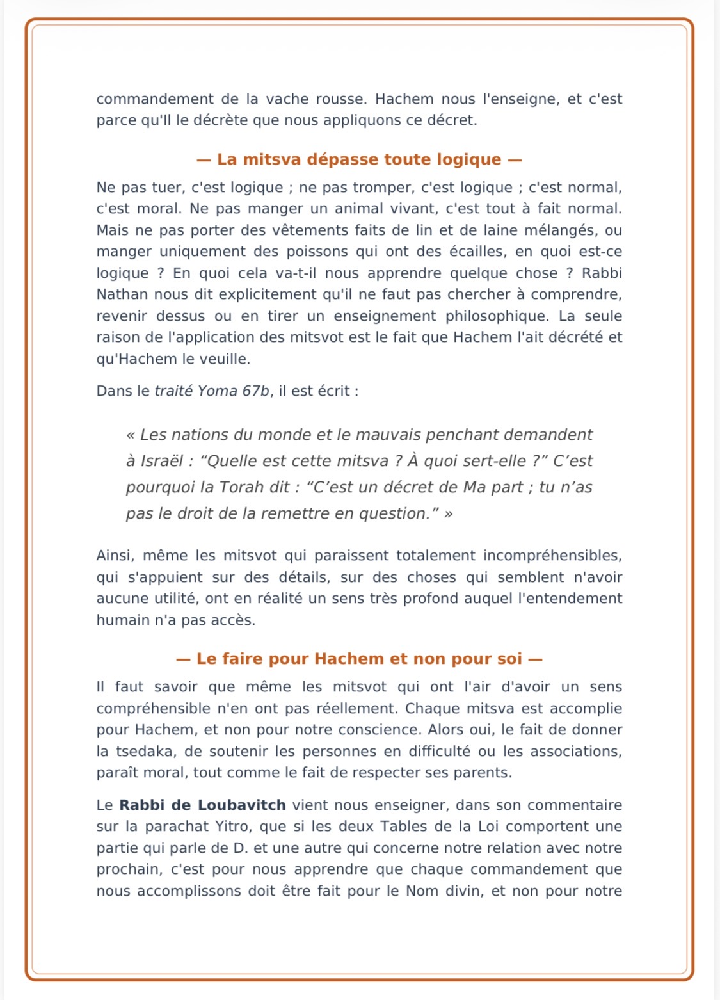
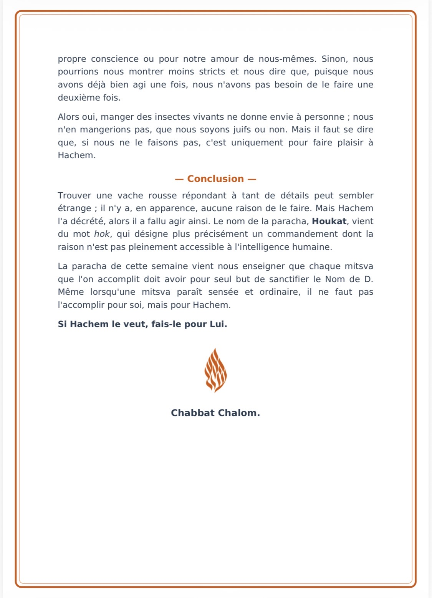
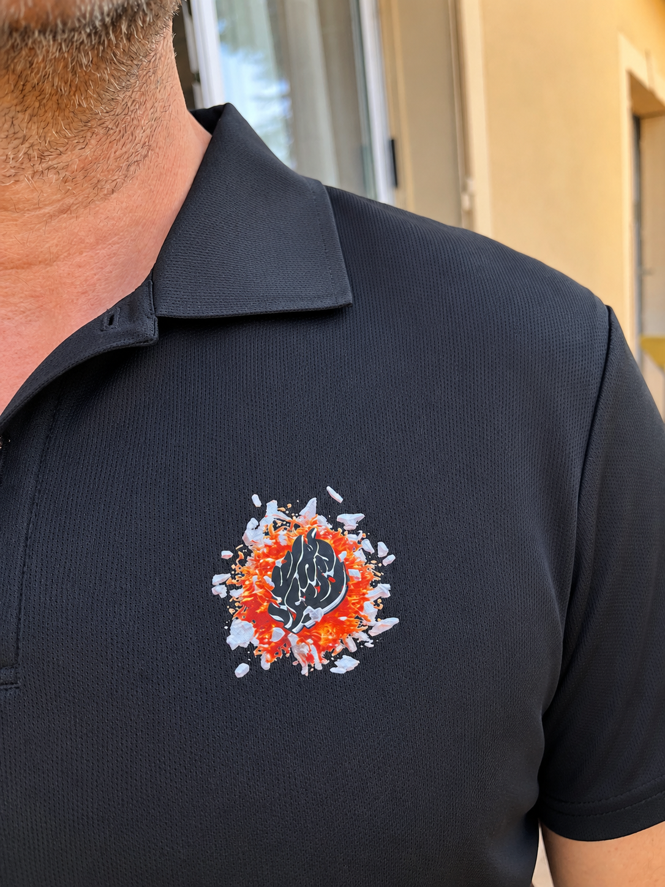
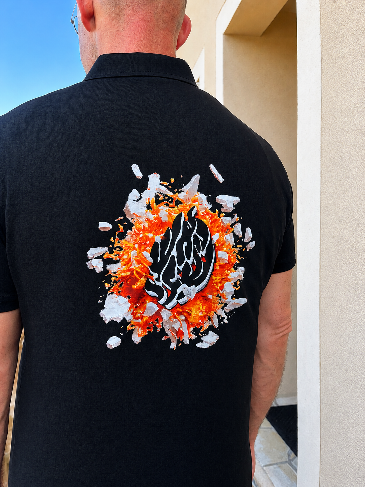
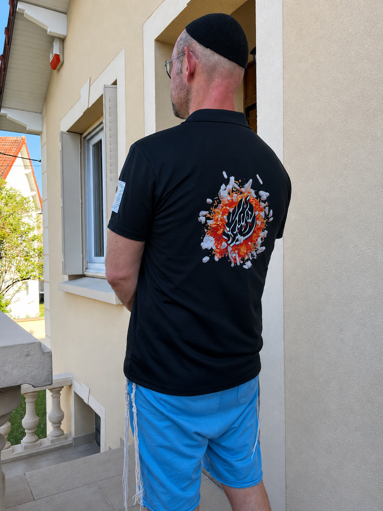

Nouveau
📖 Houkat
Lecture en ligne et version prête à imprimer.

Un espace pour renforcer sa émouna, découvrir les enseignements de Rabbi Na’hman et avancer avec Hachem, simplement.
« Heureux sommes-nous, combien notre sort est agréable. »Likouté Tefilot 24
Retrouvez le Dvar Torah consacré à Houkat, à lire directement sur le site ou à imprimer.
Pour recevoir les nouveaux Divré Torah et les nouveautés Bitahon.
Que Ta volonté soit, E.ternel notre D.ieu et D.ieu de nos pères – Lui qui entend la prière de Son peuple Israël dans la miséricorde – d’éveiller Ta bienveillance et Tes bontés sur nous. Fais-le pour Toi et dispose notre cœur à prier devant Toi, de tout notre cœur et de toute notre âme. Que notre prière coule toujours avec aisance dans notre bouche, et que nous ne rencontrions ni empêchement, ni obstacle, ni perturbation, dans notre prière.
Maître du monde ! [Toi qui] « mènes Yossef comme un troupeau, et qui trônes sur les Chérubins, fais apparaître » sur nous, dans Ton abondante miséricorde, la lumière de Ta sainteté. Qu’elle s’épanche sur nous sainteté et pureté, de manière à ce que nous puissions incliner, soumettre et briser notre mauvais penchant.
Nous aurons le mérite, de par Ton abondante bienveillance et Tes grandes bontés, de préserver la sainte Alliance, nous tous, ainsi que notre descendance. Assure-nous Ton aide constante, et sauve-nous, de par Ta puissante miséricorde et Ta grande bonté, de toutes sortes de dommages occasionnés à l’Alliance, à D.ieu ne plaise, en pensée, parole et action, de façon involontaire ou en toute connaissance de cause, sous la contrainte ou par consentement, par la vision, l’audition ou par la sollicitation des autres sens.
Qu’en eux-tous, puissions-nous être saints et purs, dans la sainteté de l’Alliance, sans le moindre dommage ni pensée parasite. En effet, dans Ta grande bienveillance, Tu nous as choisis parmi tous les peuples, Tu nous as élevés au-dessus de toutes les langues, Tu nous as mis à l’écart de toutes leurs impuretés et de toutes leurs abominations, comme Tu l’as écrit, dans Ta Torah, à notre intention : « Je vous ai séparés des peuples pour que vous soyez à Moi ».
Tu nous as tous attribué le nom de Tsadikim, comme il est dit : « [Les membres de] Ton peuple (Israël) sont tous des Tsadikim ». Je T’en prie ! Dans Ton abondante miséricorde, ne contredis pas Ta sainte Torah, à D.ieu ne plaise, car Ta parole est Vérité et subsiste à jamais. C’est pourquoi, agis envers nous dans Ta bonté, aide-nous, afin que nous fassions vraiment partie des Tsadikim, grâce au fait que Tu nous feras mériter de compter parmi ceux qui gardent l’Alliance.
Grâce à cela uniquement, il convient que nous recevions la dénomination de Tsadik, comme Tu nous l’as fait savoir, par l’entremise de Tes saints sages, à savoir qu’est appelé Tsadik uniquement celui qui préserve l’Alliance. De la sorte, de même que Tu as secouru Yossef Ton Tsadik, au moment où il fut confronté à l’épreuve, en le sauvant et en lui octroyant la force de prendre le dessus sur son penchant, ainsi, de grâce, que Tes entrailles et Ta bienveillance s’émeuvent en notre faveur.
Fais-nous réussir, par le mérite et la force de Yossef haTsadik, octroie-nous intelligence, sagesse, compréhension et connaissance, force et vigueur de sainteté, de façon à ce que nous puissions être sauvés de toutes sortes de dommages occasionnés à l’Alliance, et nous pourrons prendre le dessus sur notre penchant. Nous aurons le mérite à ce que notre pensée s’attache et adhère à Ta sainteté, de manière constante, sans s’interrompre le moindre instant, afin que nous ayons la force, grâce à cela, d’arranger convenablement notre prière devant Toi, sans aucun empêchement, retard ni confusion, de manière à ce que notre prière soit agréée devant Toi.
Ta miséricorde s’émouvra en notre faveur et Tu feras revenir Ta Face vers nous.
Accélère et hâte-Toi de nous délivrer, amène-nous notre juste Machia’h, fais-le pour Toi, et non pour nous. Aide-nous à ce que notre prière soit arrangée comme il convient, accorde-nous l’intelligence et la connaissance, afin que nous puissions régler notre parole avec justesse, sans que nous n’ayons à trébucher par les paroles de notre bouche, et nous ne dévierons pas, dans notre prière, à droite et à gauche, du chemin de droiture et de vérité.
Octroie-nous le privilège, dans Ton abondante miséricorde, de donner la Tsédaka à des pauvres méritants, offre-nous [la possibilité] d’avoir de l’argent en abondance, et [de rencontrer] des pauvres de valeur, pour leur faire du bien. « La force du roi [se définit par] l’amour de la justice. C’est Toi qui as établi l’équité, Tu as rendu la justice et fait la charité au sein de Ya’akov, car tout vient de Toi, et ce qui provient de Ta main, nous Te le donnons ».
Toi qui accomplis des œuvres de charité envers toute chair, agis avec nous de manière charitable, et accorde-nous le mérite, dans Ta bienveillance, de compter parmi ceux qui font la Tsédaka. Retire la méchanceté de notre cœur, afin que nous parvenions à offrir la charité avec joie, en présentant un visage accueillant, et que notre cœur ne soit pas animé d’un sentiment hostile quand nous donnerons au pauvre. Nous ouvrirons largement notre main en sa faveur, pour remettre au pauvre et au misérable de quoi subvenir à leurs besoins, [en comblant] ce qui leur manque.
Notre âme fournira [en vivres] l’affamé, et nous couvrirons d’un vêtement celui qui est dénudé. C’est en faveur de cette chose-là que Toi, E.ternel notre D.ieu, Tu nous béniras et Tu nous aideras à arranger notre prière devant Toi, au summum de la perfection. Que notre prière soit pure et juste, dénuée de toute pensée étrangère, afin qu’aucun écran ne sépare notre prière de Toi. Nous voici [prêts] à orienter notre prière et à lier toutes nos prières à tous les Tsadikim de notre génération.
Dans Ton abondante miséricorde, Tu éveilleras le cœur des Tsadikim de vérité qui se trouvent dans notre génération, et Tu leur donneras la force de recevoir notre prière, et ils l’élèveront devant Toi. Même si notre prière n’est pas convenable et qu’elle est mélangée à beaucoup de déchets, de sorte qu’elle ne contienne pas même un mot ou une lettre qui ne soit pure et propre – ma parole est très embarrassée et ma langue pleine d’altérations, car ce n’est pas en toute conscience que je suis appelé à prononcer [les mots], et la parole est éloignée de la pensée – par-delà tout cela, que Ta bienveillance et que Tes bontés l’emportent.
Octroie la force à Tes vrais Tsadikim, afin qu’ils puissent faire monter, élever et soulever toutes nos prières, en les purifiant et en les nettoyant de tout résidu et dommage, de manière à ce qu’ils puissent [les] élever devant Toi, [en obtenant] Ta faveur, et ils construiront, à partir d’elles, la structure de la Chékhina, en vue de La préparer, de La soutenir et de La relever de Son exil. Redresse la Souca de David qui est tombée, grâce à nos prières.
Ramène Ta Chékhina à Tsion, éclaire-nous de Ta Face, « Tourne-Toi vers moi et gracie-moi, car je ne placerai pas ma confiance dans mon arc, mon épée ne m’accordera pas le salut ». C’est en Ton Nom seulement que nous avons placé notre confiance. « Nous avons adressé tout le jour des louanges à D.ieu, et nous rendrons grâce à Ton Nom pour toujours Sélah ! ». Éveille notre juste Machia’h, pour qu’il reçoive notre prière et qu’il l’élève devant Toi.
Que toutes nos prières et celles de Ton peuple la maison d’Israël, deviennent, dans sa main, une épée à double tranchant, assurant abri, défense et protection, pour combattre ceux qui luttent contre nous et défendre notre cause. « Il épargnera le démuni et le misérable, il délivrera les âmes des pauvres. Tiens fermement le bouclier et l’arme défensive, lève-Toi pour venir à mon aide. Ceins ton épée sur la cuisse, ô guerrier, elle est ta parure et ta splendeur ».
Fais-le pour Toi et non pour nous, car l’infime parcelle de nos bonnes actions, toutes nos œuvres charitables et notre prière, absolument tout provient de Toi, et ce qui est issu de Ta main, nous Te le donnons, et ainsi qu’il est écrit : « Qui M’a précédé pour que Je le paie ? ». Non pour nous, ô E.ternel, non pour nous mais bien pour Ton Nom, fais honneur à Ta bonté et à Ta vérité. Fais-moi vivre selon Ta bonté, et j’observerai le témoignage de Ta bouche.
Accomplis pour nous le verset de l’Écriture : « En faveur de Mon Nom, Je ferai patienter Ma colère et [en vertu] de Ma louange, Je la retiendrai pour toi. C’est pour Moi, c’est pour Moi que Je le ferai, car comment [Mon Nom] serait-il profané ? Ma gloire, Je ne la prête à aucun autre ». C’est Lui qui accroît les délivrances de Son roi et qui agit avec bonté envers Son oint David et sa postérité, à jamais, amen Sélah !
Que Ta volonté, E.ternel notre D.ieu et D.ieu de nos pères – Lui qui a fait choix des cantiques chantés – soit de Te rappeler, dans Ta bienveillance et Ta grande bonté, de Ta puissante Chékhina [NdT : littéralement « la Présence de Ta force »], qui a erré, loin de Son lieu, tel un oiseau qui vagabonde, hors de son nid. « Tu Te lèveras, Tu prendras Tsion en pitié : il est temps de lui faire grâce, car le moment est venu ».
Etablis et relève de sa chute l’assemblée d’Israël. Aide-nous, dans Ton abondante miséricorde, à ce que nous méritions d’élever le son musical, afin que nous ayons la force d’arranger, devant Toi, des chants, des cantiques et des louanges, avec une voix empreinte d’allégresse et de joie. Nous jouerons nos mélodies, tous les jours de notre vie, d’une voix agréable et douce, comme Tu [les] aimes. Aide-nous à étudier constamment Ta sainte Torah, jour et nuit, de façon désintéressée.
De même que Tu as remis Ta sainte Torah à Moché Ton serviteur – durant le jour, Tu étudiais avec lui la Torah écrite, et durant la nuit la Torah orale – ainsi tu nous porteras assistance, dans Ta grande bienveillance, afin d’apprendre et de méditer sur Ta sainte Torah en permanence, de sorte que nous parviendrons à étudier jour et nuit la Torah écrite et la Torah orale. Maître du monde ! Dans Ton abondante miséricorde, accorde-nous la force de l’emporter sur le sommeil, afin que nous puissions chasser le sommeil de nos yeux, pour étudier en permanence, chaque nuit, les soixante traités [du Talmud], accompagnés de la sainte Guémara, dans le but d’apprendre, d’enseigner, d’observer, d’accomplir, de mettre en pratique et de nous consacrer à leur étude, de façon désintéressée.
« Lève-toi, chante pendant la nuit, au début des veilles ». Un fil de bonté s’étendra sur nous, par cette démarche. « Le jour, l’E.ternel donnera ordre à Sa bonté, alors que la nuit, Son chant est avec moi, une prière au D.ieu de ma vie ». Grâce à cela, Tu nous viendras en aide, de façon à ce que l’écoute de la voix chantée d’aucun homme au monde, ne nuise à notre dévotion. Que même les sons altérés en provenance des « oiseaux pris au piège » n’aient pas la force de nous porter atteinte, en nous troublant de notre service, à D.ieu ne plaise.
Donne-nous uniquement la force de les élever, de les raffiner, de les redresser et de les faire revenir à la sainteté, et Tu érigeras la Souca chancelante de David. Dans Ta grande bienveillance, que s’éveille le narcisse du Charon, et qu’il se mette à chanter d’une voix mélodieuse, dans l’entrain et l’allégresse. Tu règneras Toi seul rapidement, E.ternel, sur toutes Tes œuvres, et que s’accomplisse le verset de l’Ecriture : « Chantez [pour] D.ieu ! Chantez pour notre Roi, chantez, car D.ieu est le Roi de toute la terre, entonnez un Maskil ! » [NdT : un « Maskil » est un type de Psaume ayant pour but d’éclairer le peuple sur quelque chose de précis].
Souviens-Toi de Ton peuple Israël, dispersé parmi les nations, et de Ton Temple désolé, privé de ses occupants. « Même l’oiseau a trouvé un gîte, l’hirondelle possède un nid, dans lequel elle a déposé ses oisillons. J’ai la nostalgie de Tes autels, ô D.ieu des armées, ô mon Roi et mon D.ieu ! ». Ramène les Cohanim à leur tâche, les Lévites sur leur estrade, à leur cantique et à leur chant, et réinstalle Israël dans sa demeure. Fais-nous don de l’intelligence et de la sagesse de sainteté, afin de parvenir à attirer en permanence sur nous le joug de Ton Royaume, de dévoiler Ta Royauté et Ta souveraineté sur tous les habitants du monde.
Instaure rapidement le trône de David, amène-nous vite, sans plus tarder, le Machia’h fils de David, le [poète] plaisant des chants d’Israël. « Alors notre bouche se remplira de rire, et notre langue, de chant ». Nous nous répandrons alors en cantiques, nous chanterons et nous entonnerons [des airs joyeux], devant Toi, durant toute notre vie, et s’accomplira le verset de l’Ecriture : « L’E.ternel [se manifeste] pour nous sauver », et nous entonnerons mes mélodies, tous les jours de notre vie, sur le Temple de D.ieu, rapidement et de nos jours, amen.
Une âme exceptionnelle au cœur du hassidisme
Rabbi Na’hman de Breslev naît en 1772 à Médzibouz, en Ukraine. Il est l’arrière-petit-fils du Baal Chem Tov, fondateur du mouvement hassidique. Dès son plus jeune âge, il se distingue par une soif extraordinaire de spiritualité et d’étude. Alors que le peuple juif traverse une période de grandes difficultés spirituelles et que le hassidisme rencontre une forte opposition, Rabbi Na’hman apparaît comme une lumière destinée à raviver la foi et l’espérance.
Enfant, il consacre de longues heures à l’étude de la Torah et à la prière. On raconte qu’il se rendait régulièrement, seul, sur la tombe du Baal Chem Tov afin d’y déverser son cœur devant Hachem. Son désir de se rapprocher de Dieu ne cesse de grandir et marque toute sa vie.
Selon l’usage de l’époque, Rabbi Na’hman se marie peu après sa Bar-Mitsva avec Sashia, fille de Rabbi Ephraïm d’Oussyatin. Le couple aura huit enfants : six filles et deux garçons.
Très tôt, de nombreux disciples et érudits reconnaissent sa grandeur spirituelle. Installé à Medvédèvka durant plusieurs années, il attire aussi bien de grands talmidé hakhamim que des hommes simples en quête de vérité. Son enseignement met l’accent sur la joie, la prière sincère, la émouna et la proximité avec Hachem.
En 1798, animé d’un profond désir spirituel, Rabbi Na’hman entreprend un voyage vers la Terre d’Israël. Malgré les nombreux dangers et difficultés rencontrés en chemin, il atteint finalement Erets Israël à la veille de Roch Hachana.
Ce séjour marque profondément sa vie et son enseignement. Il y puise de nouvelles forces spirituelles et une compréhension encore plus profonde de sa mission auprès du peuple juif.
En 1802, Rabbi Na’hman s’installe dans la ville de Breslev. C’est de cette ville que ses disciples tireront plus tard le nom de « Breslev ».
Cette même année a lieu l’une des rencontres les plus importantes de l’histoire du mouvement : celle de Rabbi Na’hman avec Rabbi Nathan de Némirov. Rabbi Nathan devient son disciple le plus proche et consacrera sa vie à préserver, retranscrire et diffuser l’ensemble de ses enseignements.
Grâce à son dévouement exceptionnel, les enseignements de Rabbi Na’hman ont pu parvenir jusqu’à notre génération.
L’œuvre de Rabbi Na’hman a profondément marqué le monde juif. Son livre principal, le Likouté Moharan, rassemble ses enseignements sur la émouna, la prière, la joie, la téchouva et le service divin. Il est également l’auteur du Séfer HaMidot, recueil de conseils spirituels, ainsi que des célèbres Contes de Rabbi Na’hman, qui renferment de profonds secrets de la Torah.
Son disciple Rabbi Nathan de Némirov consacra sa vie à préserver et diffuser cet héritage. Il rédigea notamment le Likouté Halakhot, vaste commentaire reliant les enseignements de Rabbi Na’hman aux lois de la Torah. Grâce à cette œuvre, les enseignements du Maître trouvent une application concrète dans tous les aspects de la vie juive.
Peu avant son départ de ce monde, Rabbi Na’hman révéla également le Tikoun Haklali, composé de dix Téhilim qu’il présenta comme une réparation spirituelle d’une importance particulière. Aujourd’hui encore, des milliers de personnes récitent ces psaumes conformément à son enseignement.
Après plusieurs années de souffrance dues à la tuberculose, Rabbi Na’hman quitte Breslev en 1810 et s’installe à Ouman.
Il choisit cette ville notamment en raison de la sainteté particulière du lieu, marqué par le sacrifice de milliers de Juifs qui y sanctifièrent le Nom d’Hachem.
Le 18 Tichri 5571 (1810), Rabbi Na’hman quitte ce monde à l’âge de trente-huit ans. Avant son départ, il exprime sa confiance dans la pérennité de son enseignement et dans la force spirituelle qu’il continuera d’apporter aux générations futures.
Plus de deux siècles après sa disparition, l’influence de Rabbi Na’hman de Breslev demeure immense. Ses enseignements continuent d’inspirer des milliers de personnes à travers le monde.
Son message central reste plus actuel que jamais : ne jamais perdre espoir, renforcer sa émouna, parler à Hachem avec simplicité et servir Dieu dans la joie.
Comme il l’enseignait lui-même :
« Il n’existe absolument aucun désespoir dans le monde. »
À travers ses livres, ses contes et ses enseignements, Rabbi Na’hman continue d’éclairer le chemin de ceux qui cherchent à se rapprocher d’Hachem.
La Hitbodédout est l’un des enseignements centraux de Rabbi Na’hman de Breslev. Le mot signifie « s’isoler ». Il s’agit de réserver un moment pour parler seul à Hachem, avec ses propres mots, dans sa langue habituelle, en ouvrant son cœur sans texte préparé.
Selon Rabbi Na’hman, la prière est l’arme principale du Juif.
L’homme mène constamment des combats :
Pour toutes ces guerres, la principale arme n’est pas la force physique ni l’intelligence, mais la prière.
La Hitbodédout permet donc de se connecter directement à Hachem et de recevoir Son aide dans tous les domaines de la vie.
Le principal n’est pas la beauté des mots mais la sincérité.
Si une personne est triste, découragée, éloignée ou ne trouve pas les mots, elle doit quand même essayer.
Même une seule phrase peut avoir une immense valeur.
« Hachem, aide-moi à Te parler. »
Cela est déjà une véritable Hitbodédout.
Après avoir étudié la Torah ou les enseignements d’un Tsadik, il faut les transformer en demandes.
Au lieu de seulement apprendre l’importance de la émouna :
« Hachem, aide-moi à avoir une véritable émouna. »
Au lieu d’étudier la patience uniquement en théorie :
« Hachem, donne-moi la patience dans les épreuves. »
Ainsi, la Torah entre dans la vie de la personne.
La Hitbodédout n’est pas seulement un moment de prière.
Elle crée une relation personnelle avec Hachem.
La foi devient alors quelque chose de vivant.
Rabbi Na’hman enseigne que les louanges et les remerciements ouvrent le cœur.
Lorsqu’une personne remercie Hachem pour :
elle attire davantage de proximité avec Lui.
Le remerciement aide aussi à sortir de la tristesse.
Rabbi Na’hman admirait particulièrement les Juifs simples.
Une parole simple dite avec vérité vaut souvent davantage que de grands discours prononcés sans cœur.
La Hitbodédout est également un moment d’introspection.
Cette réflexion permet de progresser continuellement.
L’un des messages les plus forts de Rabbi Na’hman est :
Il n’existe aucun endroit du monde où l’on ne peut plus revenir vers Hachem.
Même si une personne est tombée très bas, elle peut toujours crier vers Hachem.
Tant qu’elle continue à prier, à demander et à espérer, la porte reste ouverte.
Le but de la Hitbodédout est de vivre avec Hachem à chaque instant.
Une personne qui pratique régulièrement la Hitbodédout cherche à :
C’est pourquoi Rabbi Na’hman considérait la Hitbodédout comme l’un des chemins les plus puissants pour grandir spirituellement et se rapprocher d’Hachem.
💡 À savoir :
Ces Téfilot sont certes facultatives, mais elles sont extrêmement puissantes. Il est tout à fait possible d'y ajouter ses propres mots ou d'en retirer certaines parties selon ses besoins.
On peut parfois penser ne pas avoir le temps, mais même réciter uniquement le début ou quelques lignes de ces Téfilot est déjà très bénéfique. Et les lire entièrement ne prend généralement qu'environ cinq minutes.
Alors, plus d'excuses ! 😊
Toutefois, il vaut mieux lire seulement une partie avec une véritable concentration et un cœur sincère, plutôt que de tout réciter rapidement en pensant à autre chose.
Étude de la Torah, clarté de l’esprit et proximité avec Hachem.
Prière, sainteté de l’Alliance et délivrance.
Chant, Torah et relèvement de la Chékhina.
Que Ta volonté, E.ternel notre D.ieu et D.ieu de nos pères, soit de nous venir en aide. Dans Ton abondante bienveillance et par un effet de Tes puissantes bontés, accorde-nous le privilège d’apprendre, d’enseigner, de nous consacrer toujours à l’étude de Ta sainte Torah, de façon désintéressée, et de méditer sur elle jour et nuit. Par le mérite et la force de l’étude de la sainte Torah, rends-nous méritants, de par Ta grande miséricorde, et accorde-nous la force de soumettre, de briser et de chasser, loin de nous, le mauvais penchant.
Nous parviendrons à repousser et à supprimer le souffle de folie, ainsi que toutes sortes de démence, qui se sont collées à nous, en raison de nos mauvaises actions. Nous réussirons à chasser et à supprimer le tout, grâce à l’apprentissage et à l’étude de la sainte Torah, qui est entièrement composée de Tes Noms sacrés, de sorte que le souffle de folie et la démence n’auront absolument aucun pouvoir pour perturber notre esprit, nous parviendrons seulement à le chasser et à le retirer [loin] de nous et de notre domaine.
E.ternel, Je T’en prie ! Tu sais, Toi, l’abondance des pensées qui nous tracassent, nous perturbent et nous importunent, [en nous détournant] de Ton service sincère, à tout moment et à toute heure. Elles se manifestent toutes, à cause du souffle de folie et de la démence qui se sont collés à nous, en raison de nos mauvaises actions, à cause de nos fautes, nos péchés et nos nombreuses transgressions, au point que notre esprit en devint confus, et que notre intelligence se troubla énormément, de façon démesurée et inestimable.
Notre Père céleste, [Toi qui] es bon pour tous, et dont la bienveillance s’étend à tous Tes actes, fais-nous grâce et nous ne disparaîtrons pas, accorde-nous le mérite, dans Ton abondante miséricorde, de soumettre, de repousser et de supprimer le souffle de folie et la démence, [loin] de nous, grâce à l’étude de la sainte Torah.
De la sorte, Tu m’accorderas le mérite, dans Ta grande bienveillance, que le mauvais penchant et le souffle de folie n’aient aucun pouvoir, pour troubler mon esprit, en me faisant négliger, à D.ieu ne plaise, Ton service sincère, à cause de ses Mitsvot, lorsqu’il s’habille dans de bonnes actions, comme s’il m’incitait à une certaine Mitsva, alors qu’il dissimule en elle un piège sous mes pas, à D.ieu ne plaise, par le biais de ses Mitsvot dans lesquelles il se revêt. Toi seul, Tu sais de tout cela.
Je T’en prie, ô D.ieu, ménage et épargne mon âme malheureuse, sauve-moi de lui, de ses mauvais conseils, afin qu’il n’ait pas la force de m’égarer, à D.ieu ne plaise, par ces confusions. Me voici [prêt] à jeter tout mon fardeau sur Toi, ô mon D.ieu et D.ieu de mes pères, et je m’appuie sur Toi seul. C’est Toi qui me conduiras, dans Ta grande bienveillance, sur un chemin empreint de droiture et de vérité, à tout moment et à toute heure, à travers chacun de mes gestes, de sorte qu’ils se conformeront tous à Ton bon désir, et je ne me détournerai pas de Ta volonté, ni à droite, ni à gauche.
En effet, Tu sais, Toi, que nous sommes des êtres de chair et de sang, et qu’il nous est très sincèrement impossible d’avoir à tout moment à l’esprit Ton bon désir. C’est pourquoi, aide-moi, dans Ton abondante miséricorde, à ce que le mauvais penchant, le souffle de folie et la démence, n’aient pas la force de troubler encore mon esprit, à travers n’importe quelle perturbation existant au monde. Que j’aie seulement le mérite de m’appuyer sur Toi seul, alors que Toi, Tu auras pitié de moi, dans Ta grande bienveillance.
Tu me conduiras et Tu me feras toujours cheminer, sur la voie de la vérité, à tout moment et à chaque instant, de manière à ce que toutes mes actions, mes affaires et tous mes mouvements, ainsi que les gestes de mes enfants, de ma descendance, et de tous ceux qui dépendent de moi, soient entièrement, uniquement, constamment, conformes à Ton bon désir, dès maintenant et à jamais. Ainsi, Tu me viendras en aide, dans Ton abondante miséricorde, de sorte que je parvienne à conférer de la force au Royaume de sainteté, afin qu’il prenne l’avantage sur le Royaume mécréant, et je mériterai de renforcer le bon penchant sur l’inclination au mal.
Favorise-moi, dans Ta grande bienveillance, et épanche sur moi la sagesse et l’intelligence de sainteté, pour que je réussisse à voir, en toute chose, la lumière de l’intelligence de sainteté qui l’habite, afin de me coller à D.ieu béni soit-Il, grâce à toutes les choses qui existent dans le monde. J’aurai le privilège de comprendre à partir d’elles toutes, les allusions que Tu me signales, à tout moment, afin de me rapprocher de Toi. Ainsi, que telle soit Ta volonté, [Toi qui es] rempli de faveur, rempli de miséricorde, rempli de bonté, rempli de bien, à tout moment, à chaque instant, en permanence, de me ménager, de m’épargner, et d’épancher sur moi la grâce et la bonté.
Tu me feras trouver grâce à Tes yeux, et aux yeux de tous ceux qui me voient, et Tu me fourniras des paroles empreintes de grâce et d’implorations, de manière à ce que mes paroles s’introduisent dans Ton cœur. Tu exauceras toujours ma prière et ma requête, et Tu accompliras le verset de l’Ecriture : « Je déverserai sur la maison de David et sur l’habitant de Yérouchalayim un esprit de grâce et d’implorations ». Nous aurons ainsi le mérite que nos paroles [émises] devant Toi soient des paroles de grâce et d’implorations, de manière à ce que Tu leur accordes une place pour pénétrer dans Ton cœur, et nos dires procureront agrément et apaisement devant le trône de Ta gloire.
Maître du monde, contemple notre misère, vois notre abaissement et le mépris dont nous sommes l’objet. En effet, toute la grâce et le prestige d’Israël Ton peuple saint, sont tombés au sein de cet exil amer, alors que Ton peuple Israël est méprisé et rabaissé aux yeux des nations idolâtres et des méchants. Toute la grâce et le prestige sont tombés chez eux. C’est pourquoi, selon l’abondance de Ta miséricorde, ménage, je T’en prie, Ta grande et sainte gloire, élève, rehausse et fais croître la grâce et le prestige d’Israël, au niveau matériel et spirituel.
Supprime et soumets la grâce et le prestige des peuples idolâtres, de l’Autre côté et des méchants, de sorte qu’ils ne possèdent ni grâce ni notoriété, en haut comme en bas. Rehausse la gloire d’Israël, écoute et fais bon accueil de notre prière et de notre soupir en tout temps, vois notre labeur et discerne notre misère et notre gêne.
Accomplis le verset de l’Ecriture : « Car Il ne dédaigna pas ni ne prit en aversion la misère du pauvre, Il ne lui dissimula pas Sa Face, et Il entendit quand il L’implora ». Fais-nous grâce, réponds-nous et entends notre prière, car Tu écoutes la prière de toute bouche, parmi Ton peuple Israël, dans la miséricorde. Béni sois-Tu, qui entends la prière.
Lecture en ligne et version prête à imprimer.
Lecture en ligne et version prête à imprimer.
Lecture en ligne et version prête à imprimer.
Lecture en ligne et version prête à imprimer.
Retrouvez le Dvar Torah au format PDF.
📄 Lire le PDFRetrouvez le Dvar Torah au format PDF.
📄 Lire le PDFRetrouvez le Dvar Torah au format PDF.
📄 Lire le PDFRetrouvez le Dvar Torah au format PDF.
📄 Lire le PDFRetrouvez le Dvar Torah au format PDF.
📄 Lire le PDFRetrouvez le Dvar Torah au format PDF.
📄 Lire le PDF








Un polo sobre et élégant, pensé pour porter le message de confiance et d’émouna au quotidien.
26 €
Tailles disponibles
Cadres au format 10 × 15 cm. Prix unique : 7,70 €.


Format : 10 × 15 cm
7,70 €
Commander

Format : 10 × 15 cm
7,70 €
Commander

Format : 10 × 15 cm
7,70 €
Commander

Format : 10 × 15 cm
7,70 €
Commander

Format : 10 × 15 cm
7,70 €
Commander

Format : 10 × 15 cm
7,70 €
Commander

Format : 10 × 15 cm
7,70 €
Commander

Format : 10 × 15 cm
7,70 €
Commander

Format : 10 × 15 cm
7,70 €
CommanderContactez directement Bitahon. Nous vous répondrons sur WhatsApp.
06 51 97 76 74